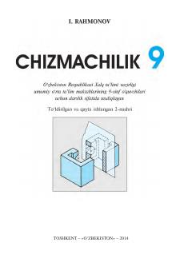

C99-sinf o'quvchilari uchun chizmachilik fani bo'yicha rasmiy darslik.
Ushbu darslik umumiy o'rta ta'lim maktablarining 9-sinf o'quvchilari uchun mo'ljallangan bo'lib, chizmachilik fanidan bilim va ko'nikmalarni chuqurlashtiradi. Unda kesim va qirqim turlari, mashina detallarining birikmalari, yig'ish chizmalari hamda kompyuter grafikasi asoslari yoritilgan. Shuningdek, mavzularni mustahkamlash uchun savollar, testlar va turli darajadagi amaliy mashqlar berilgan.